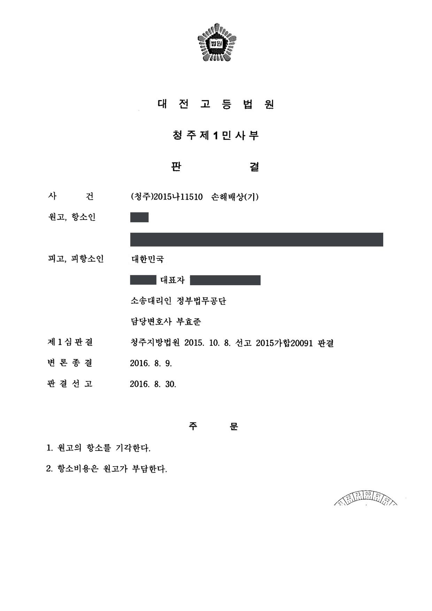
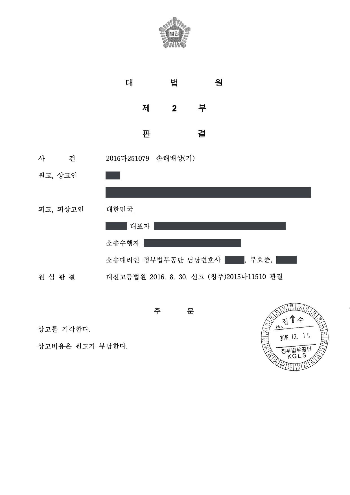

과거 수사기관 관련 손해배상 청구소송 (1·2·3심)
청주지방법원 2015가합20091 · 대전고등법원 2015나11510 · 대법원 2016다251079 · 담당변호사 부효준
사건의 요지
과거 국가정보기관의 위법행위를 주장하며 2억 원의 손해배상을 구한 사건으로, 주장 사실의 입증 여부와 소멸시효가 다투어졌습니다. 대법원까지 청구 기각이 유지되었습니다.
판결문 3장



비슷한 처분을 받으셨다면
행정처분은 처분이 있음을 안 날부터 90일 이내에 행정심판이나 취소소송으로 다투어야 하고, 기간이 지나면 돌이킬 수 없는 처분은 집행정지를 서둘러야 합니다. 처분서를 받은 날짜부터 확인해 드립니다.